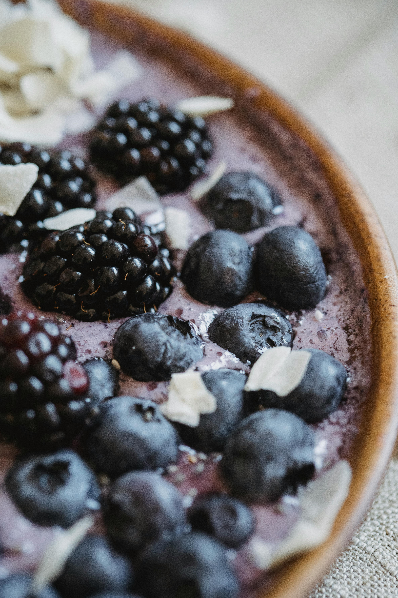

Home
Frozen Berry Yoghurt

Description
Three ingredient, low calorie, low-fat, high in protien frozen yoghurt treat
Ingredients:
- 250g Frozen mixed berry
- 250 Greek yoghurt
- 1 Tbsp honey or agave syrup
Steps:
- Blend berries, yoghurt and honey or agave syrup in a food processor for 20 seconds.
- Scoop into bowls and serve